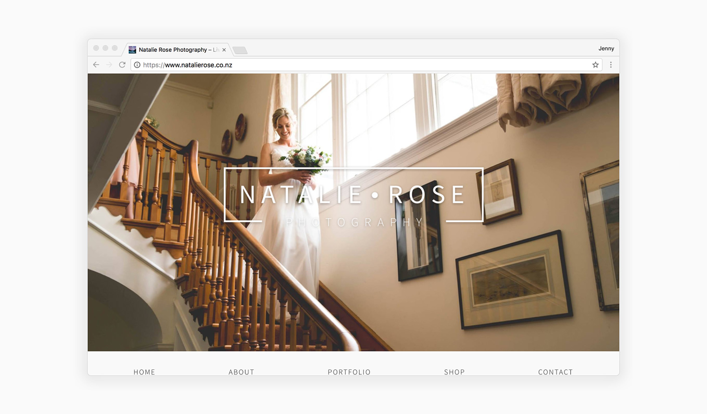
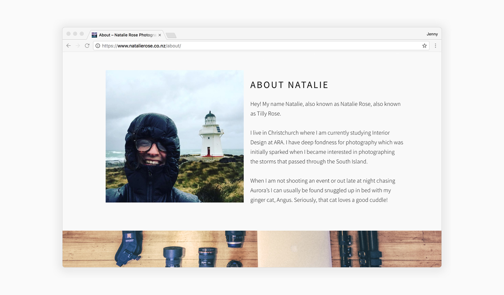
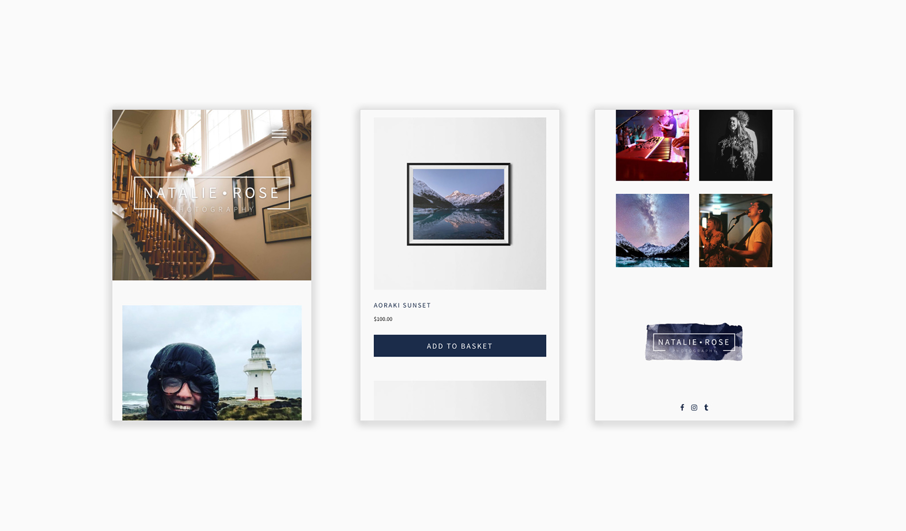

Natalie Rose Photography
WordPress Development, WooCommerce

Natalie is a young Christchurch-based photographer with a passion for shooting astrophotography and local events. She needed a website to showcase her talents, sell prints and a way for potential customers to get in contact.

As Natalie is a freelance photographer it was important that she was able to self-manage the content on the site and upload new images to her portfolio as required. It was clear that in order to do this a CMS was required.

In order to give her a customisable site, I created a one-of-a-kind Wordpress template which allows her to self-manage the WooCommerce shop and make updates to all aspects of the site as needed.